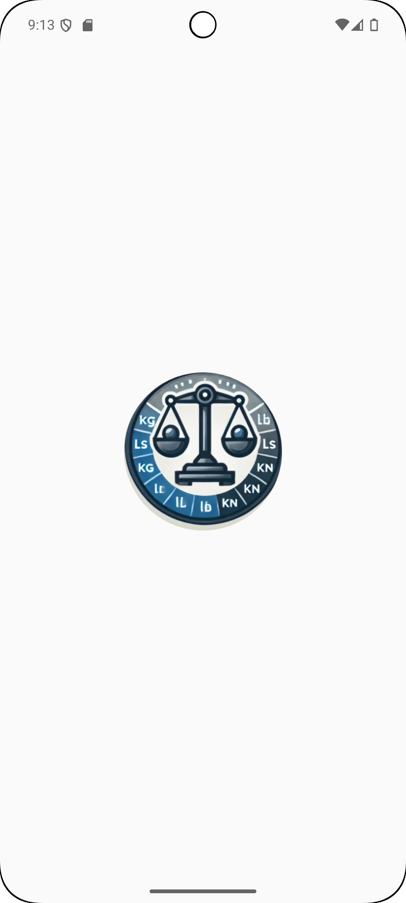
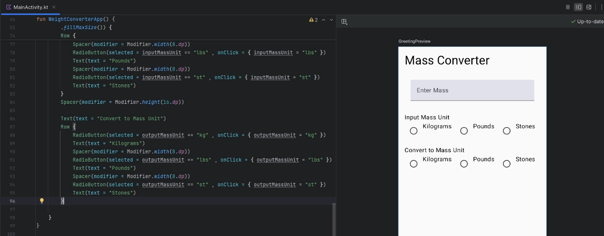

Lab 5: Mass Converter App
1. Mass Converter App Setup
|
You will be developing concert ticket app that lets you select predifined bands and check the cost of each ticket. The Mass Converter App is demoed right: You will need to download the following picture folder -> Lab_5_Picture.zip
|

|
Setting Up the Project
Video @ 1:13 - 2:02
-
Create a New Project:
- Select "Empty Activity" and click "Next".
- Name your application "Mass Converter".
- Ensure the package name is set to
com.uog.massconverter. - Set the minimum API level to 24.
- Click "Finish" to create the project.

-
Adding images and creating logo assest
|
 |
Modifying MainActivity
Video @ 2.02 - 10.21
- Modify the Main Activity Layout:
-
Update the
MainActivity.ktfile so that we have our own layout and set of Composables etc...class MainActivity : ComponentActivity() { override fun onCreate(savedInstanceState: Bundle?) { super.onCreate(savedInstanceState) setContent { MassConvertorTheme { WeightConverterApp() } } } @Composable fun WeightConverterApp() { var massEntered by remember { mutableStateOf("") } Column( modifier = Modifier .padding(16.dp) .fillMaxSize() ) { Text(text = "Mass Converter", style = MaterialTheme.typography.headlineSmall) Spacer(modifier = Modifier.height(16.dp)) TextField( value = massEntered, onValueChange = { massEntered = it }, ) } } private fun converter(){ } @Preview(showBackground = true) @Composable fun DefaultPreview() { MassConvertorTheme { WeightConverterApp() } } }-
@Composable: This annotation is used to mark a function as composable. Functions marked with
@Composablecan be used to describe part of a UI in Jetpack mpose. This allows you to build UI elements declaratively. -
by: This is used for delegation in Kotlin. Here, it is used with
rememberandmutableStateOfto create a state variable. -
remember: This composable function is used to remember a single object in a composable function. It retains state across recompositions.
-
mutableStateOf(""): This creates a mutable state initialized with an empty
string.mutableStateOfis used to create state that Jetpack Compose can observe d react to changes -
Column: This is a composable function that places its children in a vertical sequence.
-
modifier: This parameter allows you to modify the layout or behavior of a Composable.
-
Spacer: This composable function is used to create empty space in layouts.
-
TextField: This composable function creates an editable text input field.
-
onValueChange = { massEntered = it }: A lambda function that updates the
massEnteredstate variable whenever the text in the text field changes. -
lamdba: In Kotlin, a lambda is an anonymous function (a function without a name) that can be treated as a value. Lambdas are often used to pass functions as arguments to higher-order functions, which are functions that take other functions as parameters or return functions.

-
-
Finish modifying the
TextFieldso that only a number style keyboard is displayed on focus and give the field a hint/ghost text "Enter Mass"@Composable fun WeightConverterApp() { var massEntered by remember { mutableStateOf("") } Column( modifier = Modifier .padding(16.dp) .fillMaxSize() ) { Text(text = "Mass Converter", style = MaterialTheme.typography.headlineSmall) Spacer(modifier = Modifier.height(16.dp)) TextField( value = massEntered, onValueChange = { massEntered = it }, modifier = Modifier .fillMaxWidth() .padding(16.dp), label = { Text("Enter mass") }, keyboardOptions = KeyboardOptions.Default.copy(keyboardType = KeyboardType.Number) ) Spacer(modifier = Modifier.height(16.dp)) } }-
label - this is a parameter for the TextField composable in Jetpack Compose. It specifies a label for the text field.
-
{ Text("Enter mass") }: This is a lambda expression that defines the content of the
label. In this case, thelabelis aTextcomposable displaying the ring"Enter mass". -
keyboardOptions: This is another parameter for the
TextFieldcomposable. It specifies the behavior of the on-screen keyboard that appears when the text field ins focus. -
KeyboardOptions.Default: This provides the default keyboard options.
-
.copy(keyboardType = KeyboardType.Number): This creates a copy of the default keyboard options, modifying the
keyboardTypetoKeyboardType.Number.

-
MainActivity: RadioButtons
Video @ 10.21 - 17.11
- Creating InputMass RadioButtons:
-
We now are going to use some
RadioButtonsthat can be selected by the user to indicate their choices, after theTextFieldandSpaceradd aTextComposable and aRowComposable with 3 RadioButtons, 3Textand 2Spacers:... TextField(){...} Spacer(modifier = Modifier.height(16.dp)) Text("Input Mass Unit") Row { RadioButton( selected = inputMassUnit == "kg", onClick = { inputMassUnit = "kg" }) Text("Kilograms") Spacer(modifier = Modifier.width(8.dp)) RadioButton( selected = inputMassUnit == "lbs", onClick = { inputMassUnit = "lbs" }) Text("Pounds") Spacer(modifier = Modifier.width(8.dp)) RadioButton( selected = inputMassUnit == "stone", onClick = { inputMassUnit = "stone" }) Text("Stone") } Spacer(modifier = Modifier.height(16.dp)) ... -
Also, note that the
inputMassUnitneeds to bound to the so that it stores data during recomposition process, add the line below where you create themassEnteredvariable, you could also add theoutputMassUnittoo:var inputMassUnit by remember { mutableStateOf("kg") } var outputMassUnit by remember { mutableStateOf("lbs") }-
Row - This is a composable that arranges its children in a horizontal sequence.
-
RadioButton: This composable represents a radio button, which is a circular button that can be either selected or unselected. It is typically used in groups to low users to select one option from a set.
-
selected: This parameter determines whether the radio button is
selectedor not. -
inputMassUnit == "kg": This expression checks if the current value of
inputMassUnitis equal to"kg". If it is, the radio button will be shown as elected`. -
onClick: This is a lambda function that gets executed when the radio button is clicked.
-
{ inputMassUnit = "kg" }: This lambda sets the value of
inputMassUnitto"kg"when the radio button is clicked. This means that clicking the radio button will update the state to indicate that "kg" is the selected unit.

-
-
Create a new
Rowthat replicates the previousRowforoutputMassUnitRow{...} Spacer(modifier = Modifier.height(16.dp)) Text("Convert to Mass Unit") Row { RadioButton( selected = outputMassUnit == "kg", onClick = { outputMassUnit = "kg" }) Text("Kilograms") Spacer(modifier = Modifier.width(8.dp)) RadioButton( selected = outputMassUnit == "lbs", onClick = { outputMassUnit = "lbs" }) Text("Pounds") Spacer(modifier = Modifier.width(8.dp)) RadioButton( selected = outputMassUnit == "stone", onClick = { outputMassUnit = "stone" }) Text("Stone") }
MainActivity: Button and Converter Function
Video @ 17.11 - 27.39
-
Now we are going to use a
ButtonComposable that invokes andonClickmethod to calcualte the user input and their selectedRadioButtonoptions. Underneath the lastRow{...}create a newSpacerComposable and aButtonComposable:
-
Navigate back up to where you defined the variables that are remembered across recompositon and define the following;
var massEntered by remember { mutableStateOf("") }andvar convertedValues by remember { mutableStateOf(arrayOf("","","")) } -
Continue building the functionality of the
Buttonand update the arguments field of theconverterfunction where it is declared:Row{ ... Button( onClick = { val mass = massEntered.toDoubleOrNull() if (mass != null && mass > 0) { convertedValues = convertor(numberFormat,mass, inputMassUnit, outputMassUnit) } } } private fun convertor(numberFormat: NumberFormat, mass: Double, inputUnit: String, outputUnit: String) : Array<String> { val conversionsToBeReturned = arrayOf<String>("","","") return conversionsToBeReturned }-
onClick - This is a lambda function that gets executed when the button is clicked.
-
massEntered.toDoubleOrNull(): This function attempts to convert the string
massEnteredinto aDouble. If the conversion is not possible (e.g., if assEnteredis not a valid number), it returnsnull`. -
mass != null: This checks if the conversion was successful.
-
mass > 0: This checks if the mass entered is greater than zero.

-
-
Continuing with the conditions inside the
Button, we will add anelseto catch the inverse of theifand display atToastNotification. We also going to add aSpacerafter the Button and 3TextComposables that will display the result of theconverterfunction by referencing the respectively array index of theconvertedValuesvariable:Button(onClick = { val mass = massEntered.toDoubleOrNull() if (mass != null && mass > 0) { convertedValues = convertor(numberFormat,mass, inputMassUnit, outputMassUnit) } else { Toast.makeText(context, "Mass must be greater than 0", Toast.LENGTH_LONG).show() } }) { Text("Convert") } Spacer(modifier = Modifier.height(16.dp)) Text("Converted Mass: ${convertedValues[0]}") Text("Weight in Newtons: ${convertedValues[1]}") Text("Weight in Kilonewtons: ${convertedValues[2]}") } -
declare the
contextvariable at the underneath the remembered variables.... var massEntered by remember { mutableStateOf("") } var convertedValues by remember { mutableStateOf(arrayOf("","","")) } var inputMassUnit by remember { mutableStateOf("kg") } var outputMassUnit by remember { mutableStateOf("lbs") } var context = LocalContext.current ...-
else: This keyword is used to define a block of code that runs if the preceding
ifcondition(s) isfalse. In this case, it runs when the mass is not eater than 0. -
Toast.makeText: This function creates a Toast message, which is a small popup message that briefly appears on the screen.
-
context: This is the
contextin which theToastshould run. It is obtained from theLocalContext.currentin a Compose function defined after remembered riables we declared. -
Toast.LENGTH_LONG: This is the duration for which the
Toastwill be shown.Toast.LENGTH_LONGmeans it will be displayed for a long duration. -
show(): This function call displays the
Toast. -
Text("Converted Mass: ${convertedValues[0]}") - Displays the first converted value, we use the
${}to reference variable that are are defined as collection, list and arrays etc

-
MainActivity: Converter Functionality
Video @ 27.39 - 43.24
-
Navigate to the top of the
MainActivty()add the following variables that stored constant conversion values and theNumberFormatto theWeightConverterApp():class MainActivity : ComponentActivity() { private val conversionToPounds: Double = 2.20462262 // lbs to kg private val conversionToStones: Double = 0.15747304 // lbs to kg private val gravity : Double = 9.81 // m/s^2 ... override fun onCreate(savedInstanceState: Bundle?) { ... } @Composable fun WeightConverterApp() { var massEntered by remember { mutableStateOf("") } ... val numberFormat = remember { NumberFormat.getInstance().apply { maximumFractionDigits = 2 minimumFractionDigits = 2 } } ``` </div> </div> Next go back
Converter()and let's create the calculations to convert between different unitsprivate fun converter(numberFormat: NumberFormat, mass : Double, inputUnit: String, outputUnit: String) : Array<String>{ val conversionsToBeReturned = arrayOf<String>("","","") val massInKg = when (inputUnit) { "kg" -> mass "lbs" -> mass / conversionToPounds "st" -> mass / conversionToStones else -> 0.0 } val converted = when (outputUnit){ "kg" -> "$massInKg kg" "lbs" -> "${numberFormat.format(mass * conversionToPounds)} lbs" "st" -> "${numberFormat.format(mass * conversionToStones)} stone" else -> "" } conversionsToBeReturned[0] = converted conversionsToBeReturned[1] = "${numberFormat.format(massInKg * gravity)} N" conversionsToBeReturned[2] = "${numberFormat.format(massInKg * gravity / 1000)} kN" return conversionsToBeReturned }-
val massInKg - Declares a read-only variable that stores the
massconverted to kilograms. -
when (inputUnit) - Checks the value of the
inputUnitvariable and performs different actions based on its value. -
"kg" - If the
inputUnitis kilograms, it directly assigns the input mass tomassInKg. -
"lbs" - If the
inputUnitis pounds, it converts the mass from pounds to kilograms by dividing it byconversionToPounds. -
"st" - If the
inputUnitis stones, it converts the mass from stones to kilograms by dividing it byconversionToStones. -
else - For any other unit (or if
inputUnitdoesn't match any of the specified cases), it assigns0.0tomassInKg. -
when (outputUnit): Checks the value of the
outputUnitvariable and performs different actions based on its value. -
"kg" - If the
outputUnitis kilograms, it creates a string that includes the mass in kilograms (massInKg). -
"lbs" - If the
outputUnitis pounds, it converts the mass from kilograms to pounds by multiplying it byconversionToPoundsand formats the result using mberFormat`. The formatted string includes the mass in pounds. -
"st" - If the
outputUnitis stones, it converts the mass from kilograms to stones by multiplying it byconversionToStonesand formats the result using mberFormat`. The formatted string includes the mass in stones. -
else - For any other unit (or if
outputUnitdoesn't match any of the specified cases), it assigns an empty string to converted.
-
Without the Formater:

-
With the Formater:

If you run the app you should now be able to reproduce the following:
Code: whole program [172 lines]...
package com.uog.massconverter import android.os.Bundle import android.widget.Toast import androidx.activity.ComponentActivity import androidx.activity.compose.setContent import androidx.activity.enableEdgeToEdge import androidx.compose.foundation.layout.Column import androidx.compose.foundation.layout.Row import androidx.compose.foundation.layout.Spacer import androidx.compose.foundation.layout.fillMaxSize import androidx.compose.foundation.layout.fillMaxWidth import androidx.compose.foundation.layout.height import androidx.compose.foundation.layout.padding import androidx.compose.foundation.layout.width import androidx.compose.foundation.text.KeyboardOptions import androidx.compose.material3.Button import androidx.compose.material3.MaterialTheme import androidx.compose.material3.RadioButton import androidx.compose.material3.Scaffold import androidx.compose.material3.Text import androidx.compose.material3.TextField import androidx.compose.runtime.Composable import androidx.compose.runtime.getValue import androidx.compose.runtime.mutableStateOf import androidx.compose.runtime.remember import androidx.compose.runtime.setValue import androidx.compose.ui.Modifier import androidx.compose.ui.platform.LocalContext import androidx.compose.ui.res.stringResource import androidx.compose.ui.text.input.KeyboardType import androidx.compose.ui.tooling.preview.Preview import androidx.compose.ui.unit.dp import com.uog.massconverter.ui.theme.MassConverterTheme import java.text.NumberFormat class MainActivity : ComponentActivity() { private val conversionToPounds: Double = 2.20462262 // lbs to kg private val conversionToStones: Double = 0.15747304 // lbs to kg private val gravity : Double = 9.81 // m/s^2 override fun onCreate(savedInstanceState: Bundle?) { super.onCreate(savedInstanceState) enableEdgeToEdge() setContent { MassConverterTheme { WeightConverterApp() } } } @Composable fun WeightConverterApp() { var massEntered by remember { mutableStateOf("") } var inputMassUnit by remember { mutableStateOf("") } var outputMassUnit by remember { mutableStateOf("") } var convertedValues by remember { mutableStateOf(arrayOf("","","")) } val numberFormat = remember { NumberFormat.getInstance().apply { maximumFractionDigits = 2 minimumFractionDigits = 2 } } val context = LocalContext.current Column(modifier = Modifier .padding(24.dp) .fillMaxSize() ) { Text( text = stringResource(id = R.string.app_name), style = MaterialTheme.typography.headlineLarge) Spacer(modifier = Modifier.height(16.dp)) TextField( value = massEntered, onValueChange = { massEntered = it }, modifier = Modifier .fillMaxWidth() .padding(16.dp), label = { Text(text = "Enter Mass")}, keyboardOptions = KeyboardOptions.Default.copy(keyboardType = KeyboardType.Number) ) Spacer(modifier = Modifier.height(16.dp)) Text(text = "Input Mass Unit") Row { RadioButton(selected = inputMassUnit == "kg" , onClick = { inputMassUnit = "kg" }) Text(text = "Kilograms") Spacer(modifier = Modifier.width(8.dp)) RadioButton(selected = inputMassUnit == "lbs" , onClick = { inputMassUnit = "lbs" }) Text(text = "Pounds") Spacer(modifier = Modifier.width(8.dp)) RadioButton(selected = inputMassUnit == "st" , onClick = { inputMassUnit = "st" }) Text(text = "Stones") } Spacer(modifier = Modifier.height(16.dp)) Text(text = "Convert to Mass Unit") Row { RadioButton(selected = outputMassUnit == "kg" , onClick = { outputMassUnit = "kg" }) Text(text = "Kilograms") Spacer(modifier = Modifier.width(8.dp)) RadioButton(selected = outputMassUnit == "lbs" , onClick = { outputMassUnit = "lbs" }) Text(text = "Pounds") Spacer(modifier = Modifier.width(8.dp)) RadioButton(selected = outputMassUnit == "st" , onClick = { outputMassUnit = "st" }) Text(text = "Stones") } Spacer(modifier = Modifier.height(16.dp)) Button(onClick = { val mass = massEntered.toDoubleOrNull() if(mass != null && mass > 0){ convertedValues = converter(numberFormat, mass, inputMassUnit, outputMassUnit) } else{ Toast.makeText(context,"Mass must be greater than 0", Toast.LENGTH_SHORT).show() } }) { Text("Convert") } Spacer(modifier = Modifier.height(16.dp)) Text("Converted Mass: ${convertedValues[0]}") Text("Weight in Newtons: ${convertedValues[1]}") Text("Weight in Kilonewtons: ${convertedValues[2]}") } } private fun converter(numberFormat: NumberFormat, mass : Double, inputUnit: String, outputUnit: String) : Array<String>{ val conversionsToBeReturned = arrayOf<String>("","","") val massInKg = when (inputUnit) { "kg" -> mass "lbs" -> mass / conversionToPounds "st" -> mass / conversionToStones else -> 0.0 } val converted = when (outputUnit){ "kg" -> "$massInKg kg" "lbs" -> "${numberFormat.format(mass * conversionToPounds)} lbs" "st" -> "${numberFormat.format(mass * conversionToStones)} stone" else -> "" } conversionsToBeReturned[0] = converted conversionsToBeReturned[1] = "${numberFormat.format(massInKg * gravity)} N" conversionsToBeReturned[2] = "${numberFormat.format(massInKg * gravity / 1000)} kN" return conversionsToBeReturned } @Preview(showBackground = true) @Composable fun GreetingPreview() { MassConverterTheme { WeightConverterApp() } } }
Continue Here....
- You can find royalty-freee images here: https://www.freeimages.com/
For the exercises below, us the above lab as a reference.
1. Phone Photo Prints App
Application Title Phone Photo Prints App Purpose The app determines the cost of printing photos from your phone. The pictures are delivered directly to your home Algorithm 1: The opening screen requests the number of photos to print form a user’s phone Algorithm 2: The user selects a radio buttonlabelled 4 x 6 prints (19 pence each), 5 x 7 prints (49 cent each) and 8 x 10 prints (79 cents each) then selects ORDER PRINTS button.Alogrithm 3: The cost is displayed for the number of prints and the result is rounded to the nearest cent. Do not enter more than 50 prints. Alogrithm 4: Use a theme that displays an Action bar with the custom Action bar icon in the finished layout. Use a custom launcher icon named ic_aluncher_photo.png from the downloaded zip folder. 
2. Car Wash App
Application Title Car Wash App Purpose Large cities provide car wash apps where you can purchase packages for your vehicle. Alogrithm 1: The opening screen requests the type of car wash package you would like to purchase. Algorithm 2: The user selects which type of car wash – exterior only or exterior with interior vacuum services. The Car Wash App charges $8.99 for an exterior wash and $12.99 for an exterior wash with an interior vacuum for a package of 12 or more car washes. If you select less than 12 washes, the charge is $10.99 for an exterior wash and $15.99 for an exterior with interior vacuum. Algorithm 3: After the user clicks the Buttoncontrol, the selected location and the total team coast are displayed in theTextViewcontrol.Algorithm 4: Use a customized launcher icon ic_launcher_carwash.png (from the zip folder) and display the same icon in the Action Bar using Theme. AppCompat.Light theme. Display anImageViewcontrol (carwash.png, from the zip folder). Only oneRadioButtoncontrol can be selected. A toast message should pop up when the user enters less than 12 washes that they must buy 12 washes to receive a discount.
3. Power Tool Rental App
Application Title Power Tool Rental App Purpose The app determines the cost of power washer or tiller Algorithm 1: The opening screen requests the number of days that the power tool will be rented. Algorithm 2: The user selects a radio button labelled Power Washer or Tiller and then selects the COMPUTE COSTbutton.Algorithm 3: The final cost is displayed for the number of days rented and the result is rounded to the nearest penny. Alogrithm 4: The power washer costs £55.99 a day and the tiller - £68.99 a day. Do not enter more than 7 days. Alogrithm 5: Locate an image online and resize it for use as a custom launcher icon and Action bar icon.
4. Floor Tiling App
Application Title Floor Tiling App Purpose The tiling app allows you to calculate how many tiles you need to cover a rectangular area. Algorithm 1: The opening screen requests the length and the width of a room in whole feet. Algorithm 2: The user selects whether the tiles are 12 inches by 12 inches or 18 inches by 18 inches. Algorithm 3: The number of tiles to cover the area in square feet is displayed Algorithm 4: Ensure that the user can have other units of measurement, centimeters\(^{2}\), meters\(^{2}\) etc.